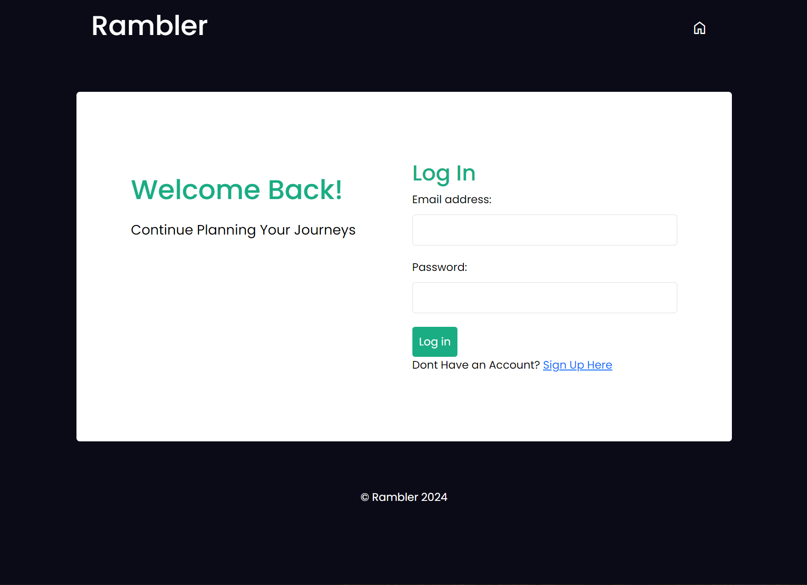

Projects
Rambler (Honours Project)
April 2024

Rambler Website >
Repository >
Rambler manages travel information, allowing users to create custom itineraries that saves important documentation to allow for efficient travelling.
Technologies used goes here
Flow Candles (University Group Project)
April 2023
Rambler >
Rambler manages travel information, allowing users to create custom itineraries that saves important documentation to allow for efficient travelling.
Technologies used goes here